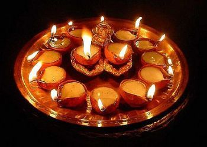

Everybody should not fire any crakers in quarantine because it is noice and air pollution and no eletricity lights in houses or in the building top only oil lamps are allowed to decorate  childrens don't worrk about crackers you can fly sky lamps or you spend and talk with your family maintain distance and fly your lamps.
How diwali was came?
Diwali (English: /dɪˈwɑːliː/; Deepavali (IAST: dīpāvali) or Divali) is the Indian festival of lights, usually lasting five days and celebrated during the Hindu Lunisolar month Kartika (between mid-October and mid-November).[7][8] One of the most popular festivals of Hinduism, Diwali symbolizes the spiritual "victory of light over darkness, good over evil, and knowledge over ignorance".[9][10][11][12] The festival is widely associated with Lakshmi, goddess of prosperity, with many other regional traditions connecting the holiday to Sita and Rama, Vishnu, Krishna, Yama, Yami, Durga, Kali, Dhanvantari, or Vishvakarman. Furthermore, it is, in some regions, a celebration of the day Lord Rama returned to his kingdom Ayodhya after defeating the demon-king Ravana.
In the lead-up to Diwali, celebrants will prepare by cleaning, renovating, and decorating their homes and workplaces with diya and rangoli (oil lamps or candles),.[13] During the Diwali people wear their finest clothes, illuminate the interior and exterior of their homes with diyas and rangoli, perform (Lakshmi puja) – worship ceremonies of Lakshmi, the goddess of prosperity and wealth,[note 1] light fireworks, and partake in family feasts, where mithai (sweets) and gifts are shared. Diwali is also a major cultural event for the Hindu and Jain diaspora from the Indian subcontinent.[16][17][18]
The five-day long festival originated in the Indian subcontinent and is mentioned in early Sanskrit texts. Diwali is usually celebrated twenty days after the Dashera (Dasara, Dasain) festival, with Dhanteras, or the regional equivalent, marking the first day of the festival when celebrants prepare by cleaning their homes and making decorations on the floor, such as rangoli.[19] The second day is Naraka Chaturdashi, or the regional equivalent which for Hindus in the south of India is Diwali proper. Western, central, eastern and northern Indian communities observe main day of Diwali on the third day, the day of Lakshmi Puja and the darkest night of the traditional month. In some parts of India, the day after Lakshmi Puja is marked with the Govardhan Puja and Balipratipada (Padwa), which is dedicated to the relationship between wife and husband. Some Hindu communities mark the last day as Bhai Dooj or the regional equivalent, which is dedicated to the bond between sister and brother,[20] while other Hindu and Sikh craftsmen communities mark this day as Vishwakarma Puja and observe it by performing maintenance in their work spaces and offering prayers.[21][22]
Some other faiths in India also celebrate their respective festivals alongside Diwali. The Jains observe their own Diwali which marks the final liberation of Mahavira,[23][24] the Sikhs celebrate Bandi Chhor Divas to mark the release of Guru Hargobind from a Mughal Empire prison,[25] while Newar Buddhists, unlike other Buddhists, celebrate Diwali by worshipping Lakshmi, while the Bengali Hindus generally celebrate Diwali, by worshipping Goddess Kali.[26][27] The main day of the festival of Diwali (the day of Lakshmi puja) is an official holiday in Fiji,[28] Guyana,[29] India, Malaysia (except Sarawak),[30] Mauritius, Myanmar,[31] Nepal,[32] Pakistan,[33] Singapore,[34] Sri Lanka, Suriname, and Trinidad and Tobago.[35]
Wrote by A.Harsha vardhan sai dev.